Karya seni lukis original oleh anggota Yayasan Cahaya Mutiara Ubud
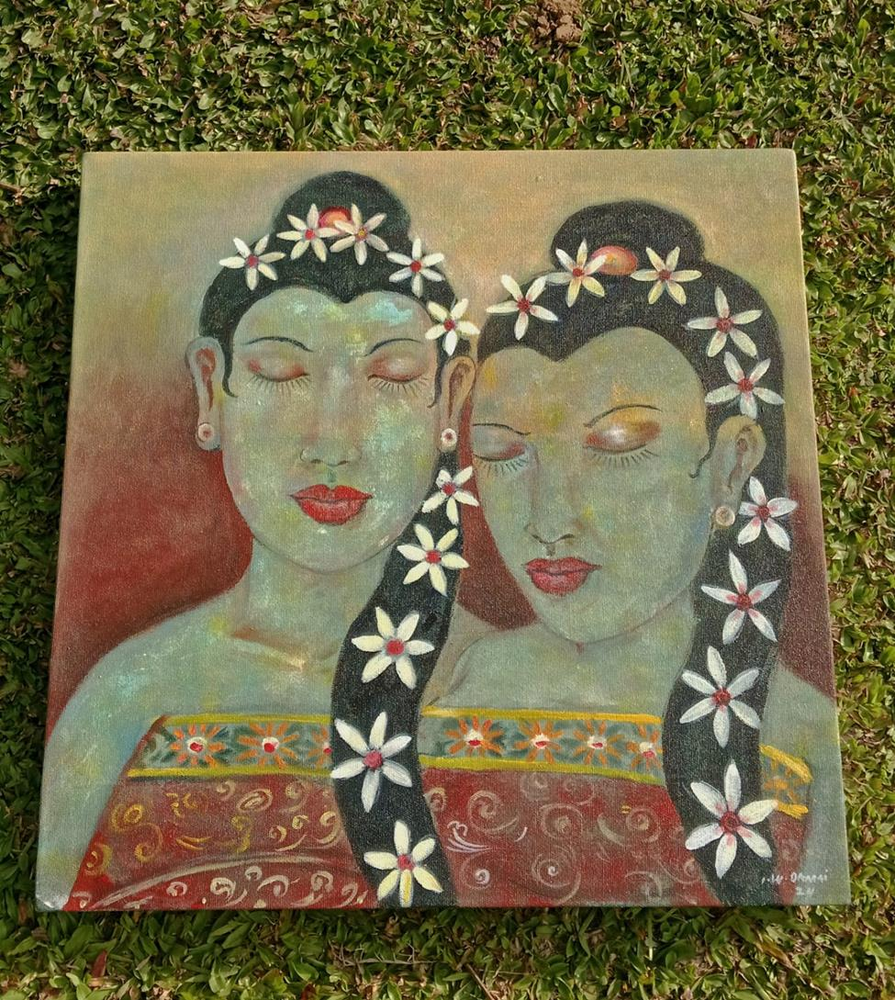
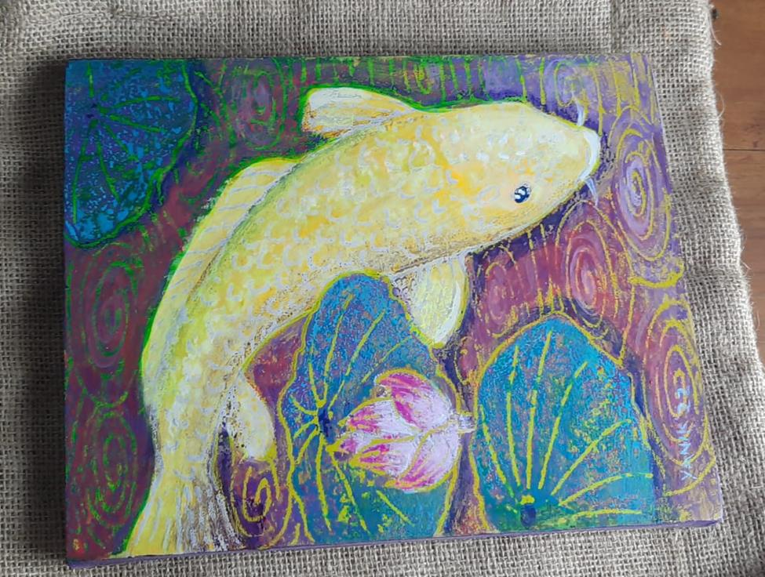
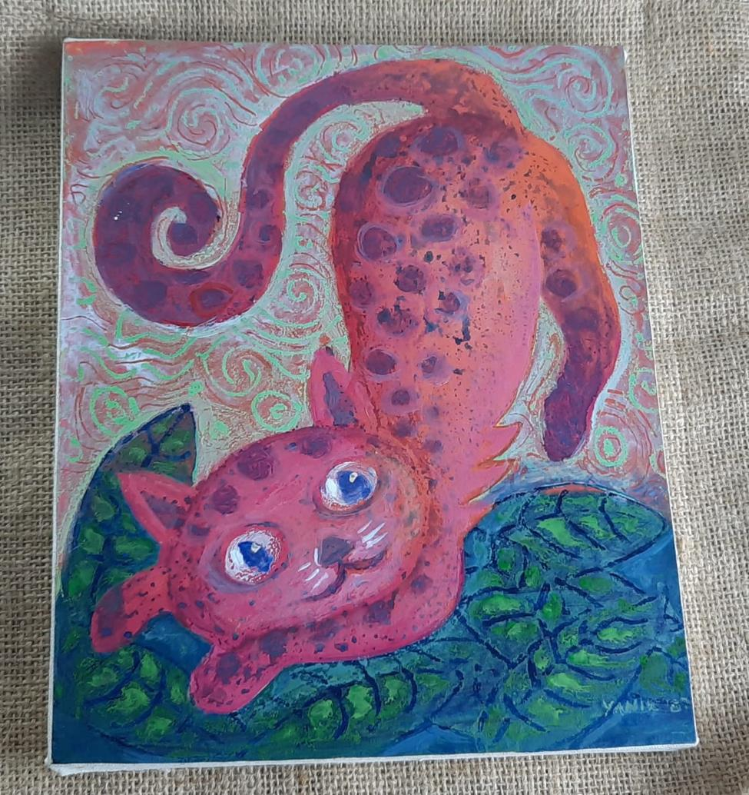
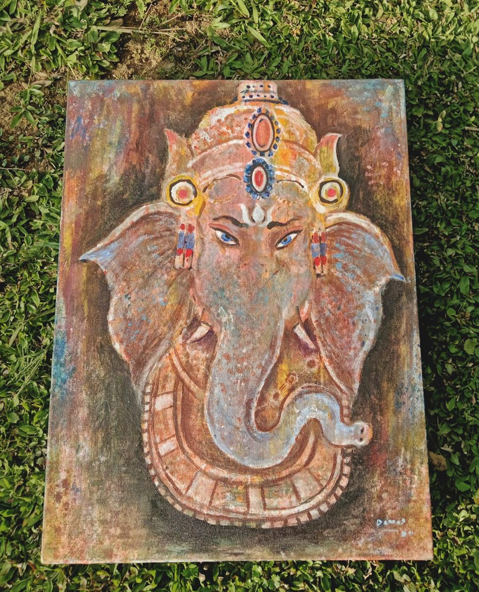
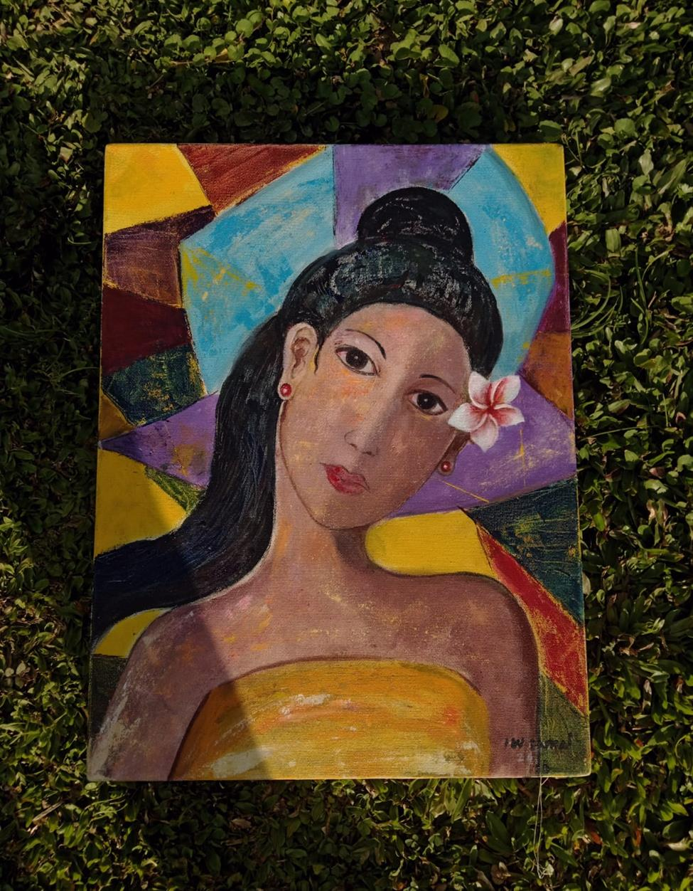
Tari Bali, fire dance, dan kelas jembe bersama anggota yayasan
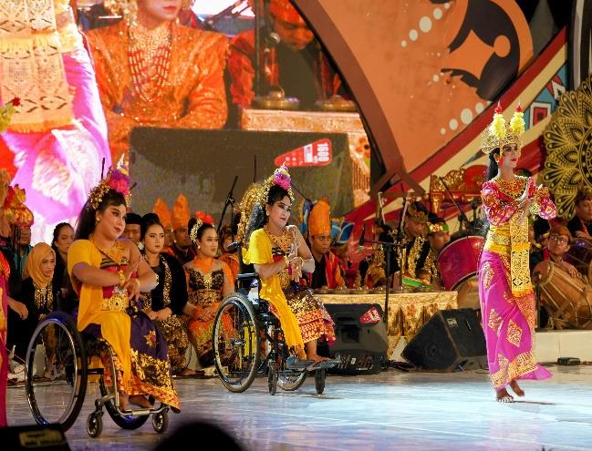
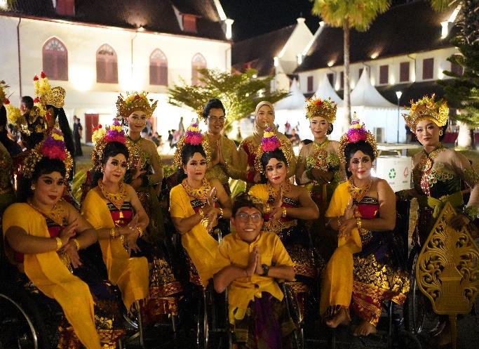
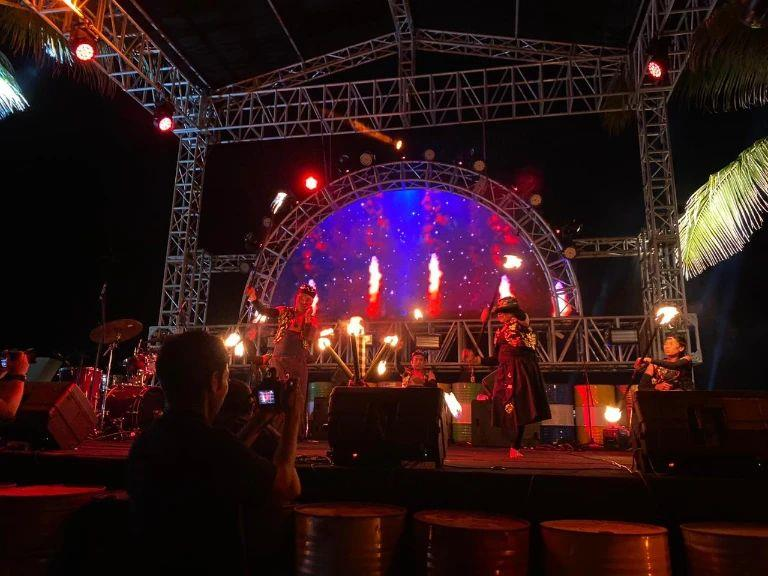
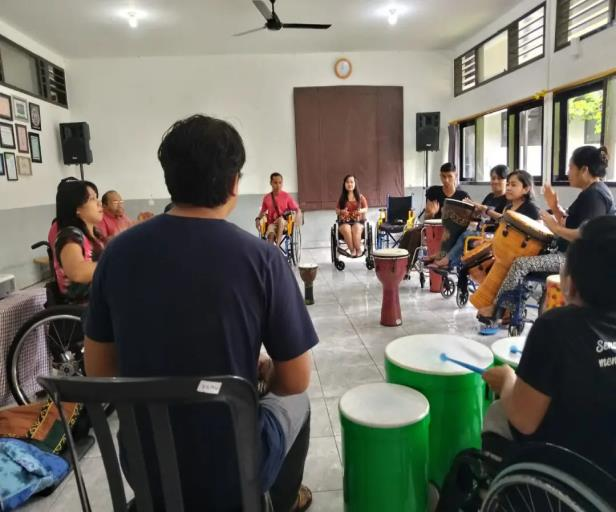
Prestasi atlet penyandang disabilitas di tingkat nasional dan internasional
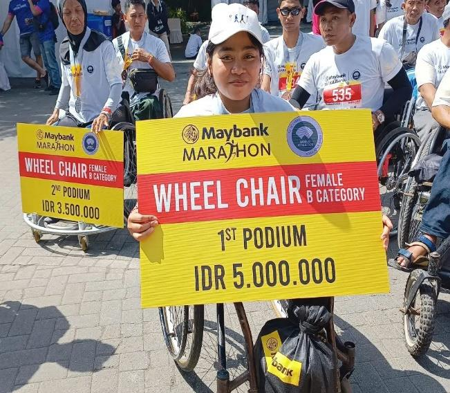
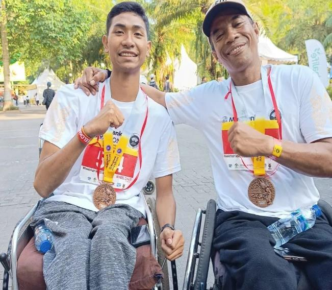
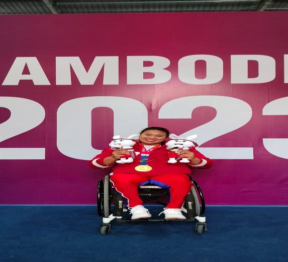
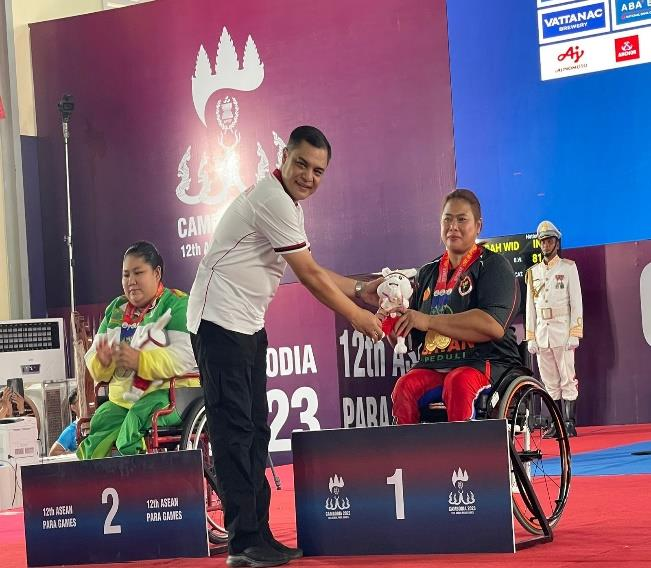
Kebun organik 10 are milik yayasan — dikelola bersama oleh seluruh anggota
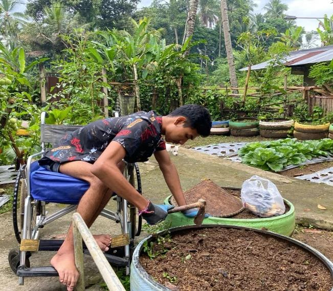
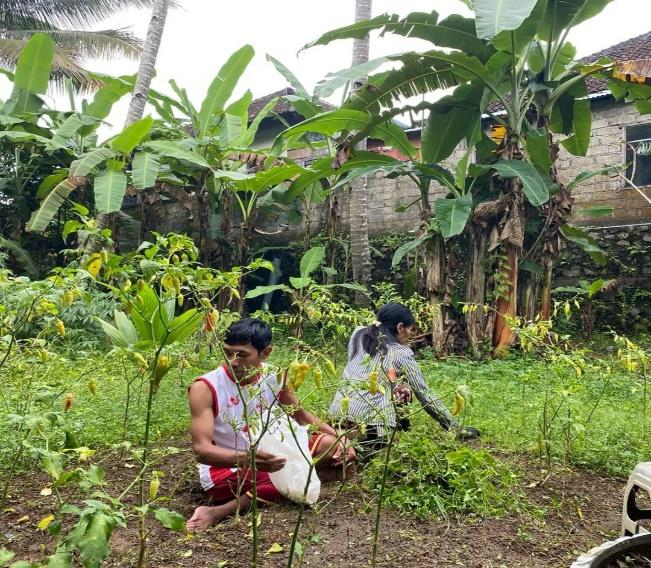
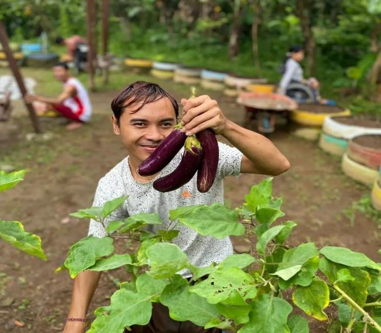
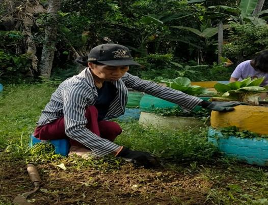
Kelas komputer, bahasa Inggris, baca tulis, dan menjahit untuk anggota
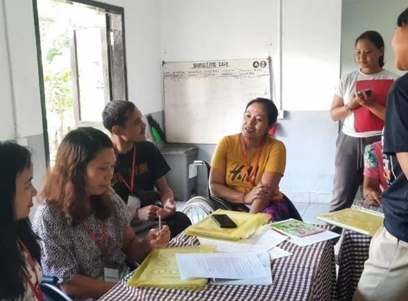
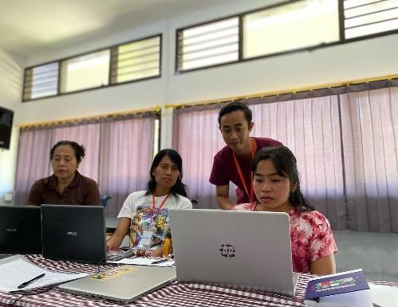
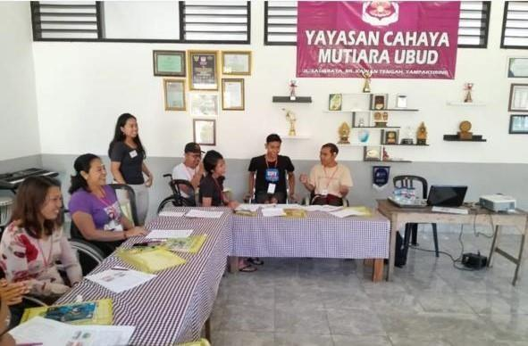
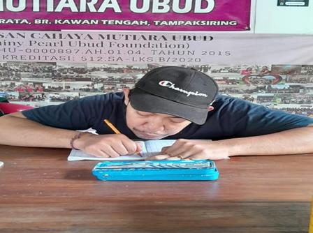
Produk kopi 100% Bali asli — diluncurkan 2020, bekerja sama dengan petani lokal
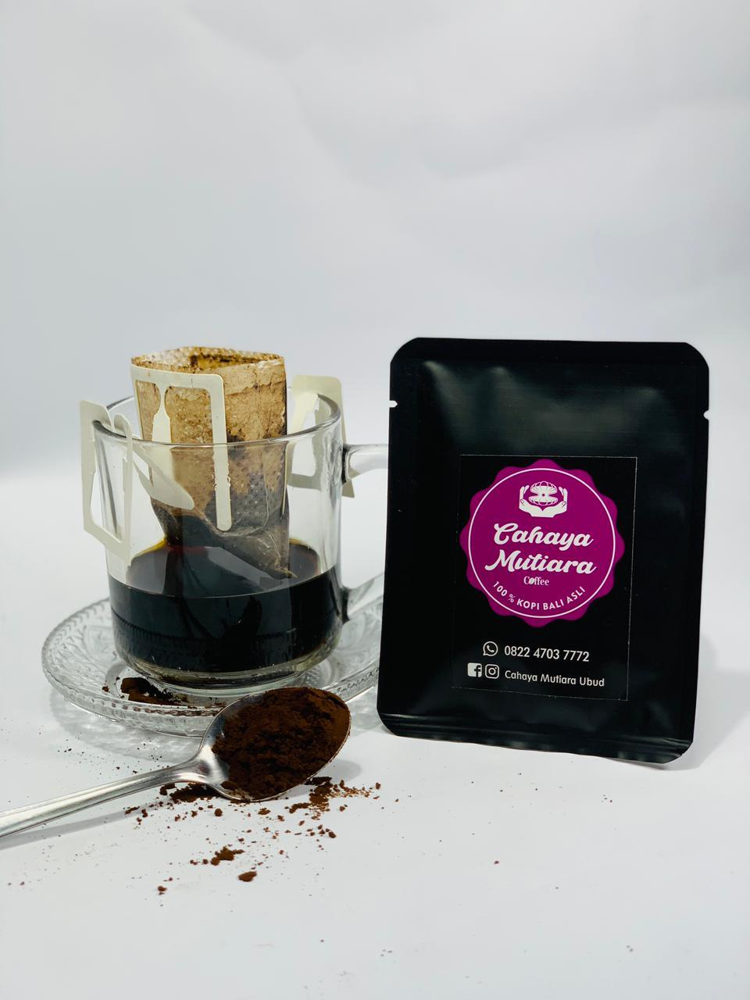
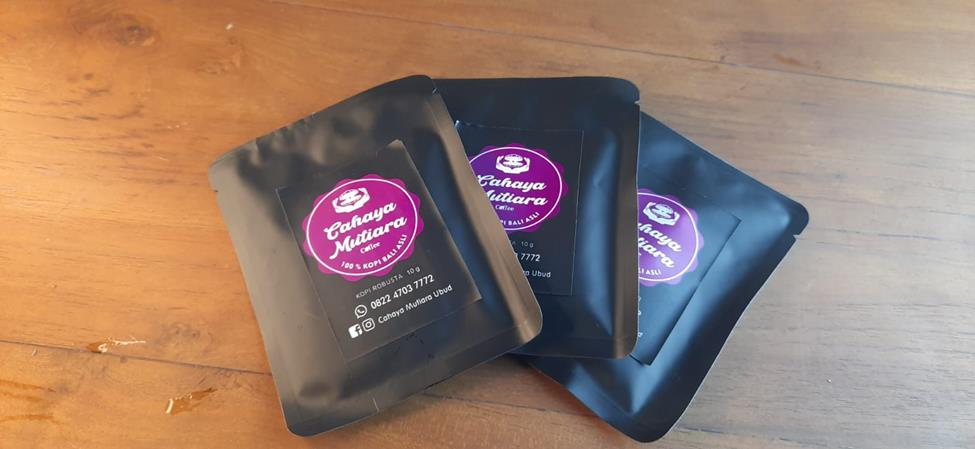
Pesan Kopi CMU:
📱 +62 822 4703 7772 (WhatsApp)
📘 Cahaya Mutiara Ubud
📸 @cahayamutiaraubud